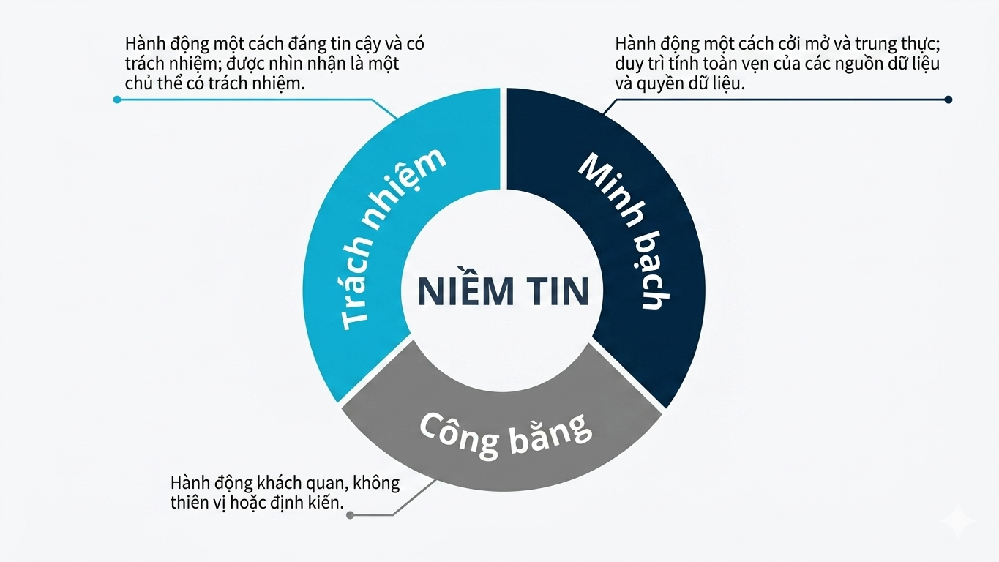
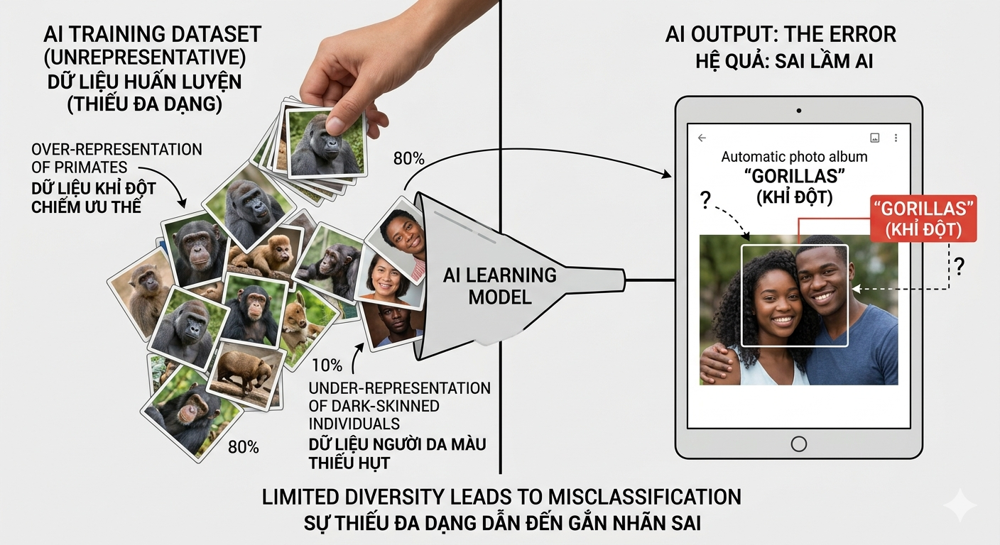
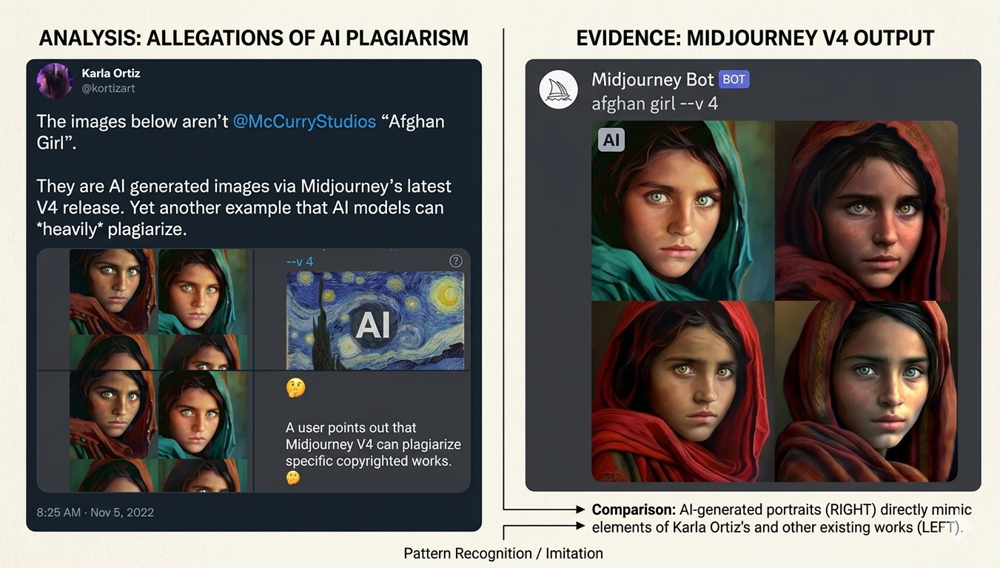
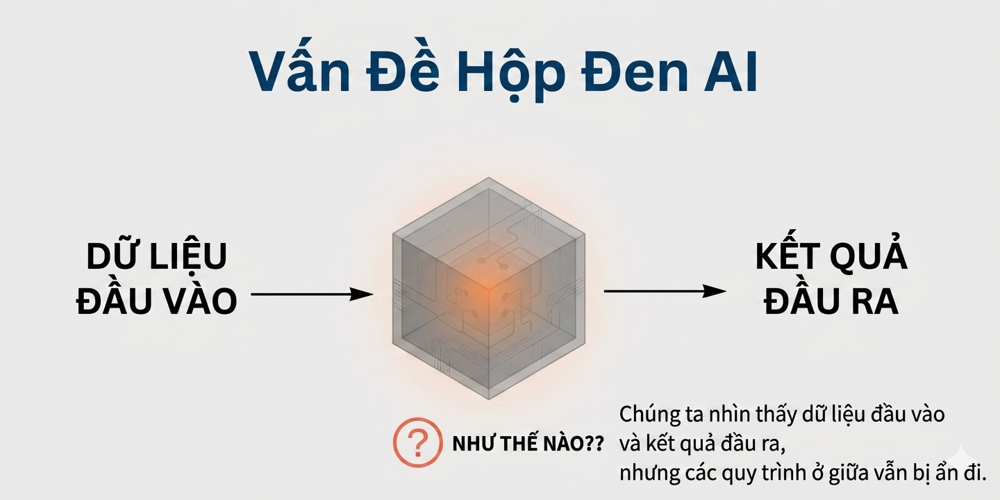
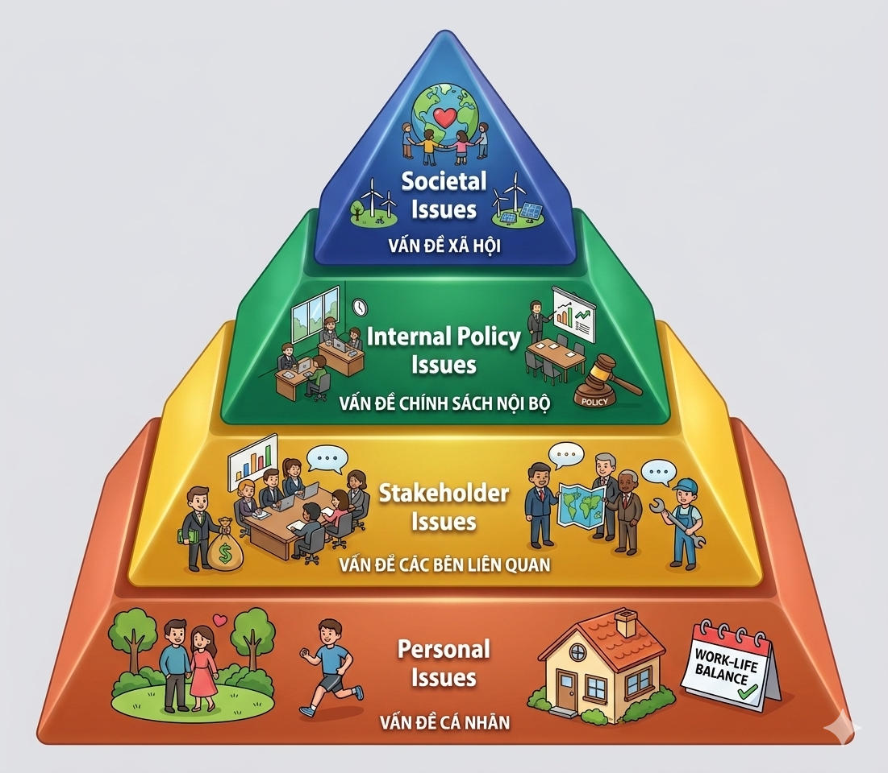
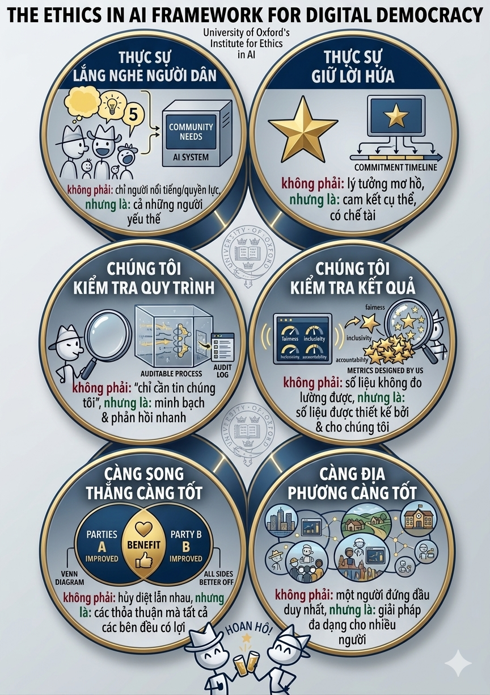
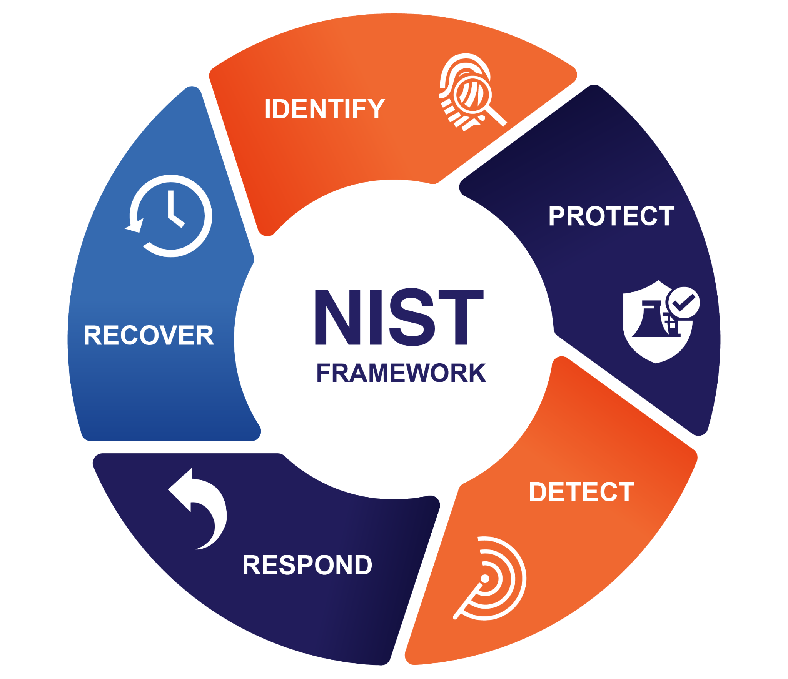
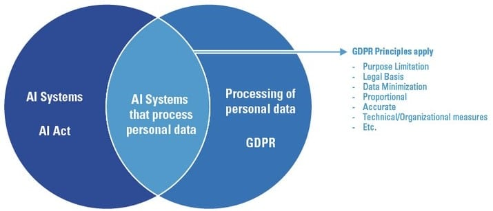

Giới hạn của AI. Khung đạo đức. Thí nghiệm tưởng tượng. Chính sách.
Trường ĐH Công nghệ – Đại học Quốc gia Hà Nội
Sau buổi học, sinh viên có thể:
Khi AI được “nhúng” vào quyết định và sản phẩm, ta đánh giá thành công bằng tiêu chí nào ngoài độ chính xác — và ai chịu trách nhiệm khi hệ thống sai hoặc gây hại?
→ Trả lời qua: giới hạn kỹ thuật → khung đạo đức → thí nghiệm tưởng tượng → chính sách.
Vì sao phải quan tâm khi AI “đi vào đời sống”.
Ba trụ cột thường gặp trong học thuật và thực hành (FAccT — fairness, accountability, transparency):
Giảm phân biệt đối xử và kết quả bất công giữa nhóm.
Xác định được ai chịu trách nhiệm khi có hại hoặc sai sót.
Giải thích được (ở mức phù hợp) cách hệ thống hoạt động và giới hạn.

Đạo đức AI (AI ethics) nghiên cứu và hướng dẫn cách thiết kế, triển khai, và vận hành hệ thống AI sao cho phù hợp giá trị con người, giảm tác hại, và tăng lợi ích.
Mô hình đoán đúng trên tập test.
Câu hỏi: “có đúng không?”
Mô hình có công bằng, an toàn, minh bạch, hợp pháp…
Câu hỏi: “đúng cho ai, ở đâu, khi nào, và với giá nào?”
Đạo đức AI không thay kỹ thuật — nó đặt tiêu chí và ràng buộc để kỹ thuật phục vụ con người.
Những “điểm yếu” thường gặp khi triển khai AI ở thế giới thật.
Thiên lệch (bias) là sự sai lệch hệ thống trong dữ liệu, mô hình, hoặc quy trình, dẫn tới kết quả bất công hoặc không đại diện cho các nhóm khác nhau.

Ngữ cảnh (context) là thông tin nền (mục tiêu, tình huống, văn hoá, thời điểm, tri thức liên quan) giúp giải thích đúng ý nghĩa của dữ liệu và câu hỏi. AI thường không thể hiểu được hết ngữ cảnh trong ngôn ngữ con người vì khác biệt về văn hóa, ngôn ngữ, từ đồng âm, đồng nghĩa,...
Câu: “Hổ mang bò lên núi.”
Có thể hiểu: (a) rắn Hổ mang bò lên núi; hoặc (b) con Hổ mang con bò lên núi.
Nhiều mô hình hiện đại (đặc biệt mô hình lớn) đòi hỏi tài nguyên tính toán lớn, dẫn tới độ trễ (latency) và chi phí (cost) cao.
Ảo giác (hallucinations) là khi mô hình sinh ra thông tin nghe có vẻ hợp lý nhưng không đúng hoặc không có căn cứ.
Nguồn tổng quan: ACM TOIS (2024) “A Survey on Hallucination in Large Language Models” — DOI.
Đạo văn (plagiarism) là trình bày nội dung/ý tưởng của người khác như của mình, đặc biệt khi sinh văn bản/code có thể giống/khớp với nguồn đã tồn tại.
“Giống về ý” có thể chấp nhận khi bạn trích dẫn và diễn giải; “giống về chữ” (verbatim) mà không trích dẫn là rủi ro đạo văn.

Nội dung không mong muốn (undesirable content) là nội dung gây hại hoặc không phù hợp: thù ghét, quấy rối, kích động bạo lực, lừa đảo, nội dung độc hại, hoặc thao túng dư luận.
Chatbot có thể bị “dạy” nội dung độc hại qua tương tác, rồi phát tán lại ra cộng đồng.
Deepfake là nội dung (ảnh/âm thanh/video) được tạo hoặc chỉnh sửa bằng AI để giả mạo danh tính/lời nói/hành động, gây hiểu nhầm hoặc lừa đảo.
Nguồn khái niệm synthetic content / rủi ro minh hoạ: NIST AI 100-4 (PDF).
Khi AI học từ dữ liệu có bản quyền và/hoặc tạo ra nội dung giống nguồn có bản quyền, câu hỏi pháp lý phát sinh: quyền sử dụng dữ liệu, tác phẩm phái sinh, trách nhiệm khi phát tán.
Phần này mang tính khái quát; chi tiết phụ thuộc luật từng quốc gia và án lệ cập nhật.
Căn chỉnh AI (AI alignment; còn gọi liên kết giá trị / value alignment) là bài toán làm cho hệ AI khớp với mục tiêu và giá trị con người (human values) — tức hành vi và kết quả thực tế không lệch khỏi điều ta mong muốn, nhất khi mục tiêu mơ hồ hoặc các giá trị xung đột.
Bốn hướng thường gặp: Top-down, Bottom-up, Hybrid, và Giám sát cộng tác (human-in-the-loop).
Hộp đen (black box) là khi ta khó giải thích tại sao mô hình cho ra một dự đoán cụ thể: có đầu vào → có đầu ra, nhưng cơ chế bên trong không minh bạch (hoặc quá phức tạp).

Khái niệm, mô hình vấn đề, và các cách lập luận đạo đức.
Cho một tình huống khó, khung đạo đức giúp ta xác định vấn đề, so sánh lựa chọn, và biện minh quyết định.
Ý tưởng: từ cá nhân → bên liên quan → chính sách nội bộ → xã hội — phạm vi trách nhiệm mở rộng dần.

Giá trị cá nhân, lương tâm, trách nhiệm nghề nghiệp.
VD: tôi có đưa dữ liệu nhạy cảm vào AI không?
Người dùng, khách hàng, nạn nhân, nhân viên, cộng đồng.
VD: ai chịu hại khi mô hình sai?
Quy trình, tiêu chuẩn, kiểm thử, đánh giá rủi ro.
VD: có red-team, audit, logging?
Luật, chuẩn mực xã hội, tác động dài hạn.
VD: phân biệt đối xử, thao túng bầu cử, …
Chọn hành động tạo ra lợi ích ròng lớn nhất (tối đa hoá hạnh phúc / phúc lợi tổng).
Một xe điện mất phanh đang lao tới 5 người trên đường ray. Bạn có thể kéo cần gạt để chuyển hướng, nhưng đường kia có 1 người.
Không can thiệp: xe tiếp tục đường cũ → nguy cơ cho 5 người.
Kéo cần gạt: chuyển ray → nguy cơ cho 1 người (nhưng giảm tổng thiệt hại theo một cách đếm).
Trolley problem thường dùng để minh hoạ xung đột giữa trường phái đạo đức, không nhằm “giải đúng”.
Đánh giá hành động dựa trên quy tắc/chuẩn mực và bổn phận, không chỉ dựa trên kết quả.
“Nếu ai cũng làm thế, thế giới có tốt hơn không?” (tính phổ quát hoá)
Tập trung vào phẩm chất/đức hạnh của tác nhân: trung thực, dũng cảm, công bằng, cẩn trọng…
Quy tắc đúng đắn xuất phát từ thoả thuận hợp lý giữa các bên trong xã hội: quyền, nghĩa vụ, và cơ chế bảo vệ lẫn nhau (minh bạch, khiếu nại, bồi thường…).
Top-down (gài sẵn giá trị / quy tắc) + Bottom-up (học từ dữ liệu & phản hồi) + Hybrid (lai) + Giám sát cộng tác (human-in-the-loop / human oversight).
Căn chỉnh AI là chỗ đạo đức “gặp” kỹ thuật: ta phải chọn và cố định hoá giá trị (từ trường phái / chính sách), rồi biến chúng thành huấn luyện, quy tắc, kiểm thử và giám sát — để hệ không chỉ “chạy đúng” mà chạy đúng hướng với con người.
Đặt quy tắc/giá trị trước, rồi ép hệ tuân thủ: “được làm gì, không được làm gì, và ưu tiên gì”.

Không viết hết “đạo đức” thành luật; để hệ học ưu tiên từ dữ liệu và phản hồi của con người.
Kết hợp “luật cứng” (top-down) với “học ưu tiên” (bottom-up), rồi kiểm chứng.
Giữ con người trong vòng ở bước nhạy cảm: hệ đề xuất, con người quyết định; có ghi vết để quy trách nhiệm.
Đánh giá trách nhiệm đạo đức, quyền của AI, và ranh giới mô phỏng–thực chất.
AI có “hiểu” hay chỉ “bắt chước”? Nếu không hiểu, ta có nên gán quyền?
Giới hạn của suy luận, ý thức, trải nghiệm chủ quan, và hiểu nghĩa.
Một hệ có thể mô phỏng hành vi thông minh mà vẫn không có hiểu nghĩa hoặc ý thức.
Nếu một máy có thể trò chuyện sao cho người đối thoại không phân biệt được đó là máy hay người, ta có thể gọi nó là “thông minh” theo tiêu chí hành vi.
Nguồn: Alan Turing, “Computing Machinery and Intelligence” (1950).
Một người trong phòng không biết tiếng Trung nhưng có quyển “luật” để biến ký hiệu đầu vào thành ký hiệu đầu ra. Với người ngoài, phòng “trả lời tiếng Trung” rất tốt — nhưng người trong phòng không hiểu nghĩa.
Nguồn: John Searle, “Minds, Brains, and Programs” (1980).
Accountability. Khung rủi ro. Hướng tiếp cận của Mỹ, EU và Trung Quốc.
Khi AI gây hại, trách nhiệm thuộc về nhà phát triển, tổ chức triển khai, người dùng, hay chuỗi cung ứng?
Sáng kiến AI Hoa Kỳ; NIST; quy định cấp bang.

GDPR; đề xuất quy định AI (4/2021); nhóm chuyên gia cấp cao.

Kế hoạch phát triển; nguyên tắc AI; an ninh dữ liệu; sandbox quản lý.
Sáng kiến AI Hoa Kỳ (R&D + hướng dẫn đạo đức), NIST (tiêu chuẩn & best practices), và quy định cấp bang (lan can đạo đức như không phân biệt đối xử).
GDPR (bảo vệ dữ liệu & quyền riêng tư), đề xuất quy định AI (4/2021: minh bạch, trách nhiệm giải trình, quản trị rủi ro), và nhóm chuyên gia cấp cao (có trách nhiệm, lấy con người làm trung tâm).
Kế hoạch phát triển AI thế hệ mới (tích hợp + quản lý + nhân lực), Beijing AI Principles (hài hoà, công bằng, công lý), Data Security Law (an ninh mạng, an ninh quốc gia), và sandbox Thượng Hải (thử nghiệm thực tế có giám sát).
AI mạnh, nhưng có giới hạn và cần khung đạo đức + chính sách để vận hành an toàn.
Ghi chú: phần “chính sách” cần cập nhật theo văn bản chính thức và thời điểm áp dụng.